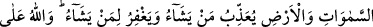

HIRSIZIN CEZÂSI
38- Hırsızlık eden erkek ve kadının, yaptıklarına karşılık bir cezâ ve Allah’tan
bir ibret olmak üzere ellerini kesin. Allah izzet ve hikmet sahibidir.
39- Kim (bu) haksız davranışından sonra tevbe eder ve durumunu düzeltirse
şüphesiz Allah onun tevbesini kabul eder. Allah çok bağışlayıcı ve esirgeyicidir.
40- Bilmez misin ki, göklerde ve yerde ne varsa hepsinin mülkiyeti Allah’a aittir;
dilediğine azap eder ve dilediğini bağışlar. Allah her şeye hakkıyle kadirdir.
“Hırsızlık eden erkek ve kadının” Yani hırsızlık eden erkek ve kadının hükmü size
tilavet edilecek olan âyetle sabittir. Hırsızlıkla ilgili tafsîlat aşağıda gelecektir.
“Yaptıklarına karşılık bir cezâ ve Allah’tan bir ibret olarak ellerini kesin.” Bu,
mukadder hükmün beyânıdır. Mânâ şöyledir: O ikisinin ellerini, yapmış oldukları
hırsızlığa karşılık olması, onların tekrar aynı işe dönmekten caydırılması ve
başkalarının da onlara uymasına mâni olunması için cezâ olarak kesiniz.
“Allah izzet sâhibidir” yaptığı işte galip gelendir. Kendisiyle tartışacak bir ortağı ve
kendisine engel olacak bir zıddı olmaksızın işini istediği gibi yürütür. “Ve” koyduğu
kanunlarda “hikmet sâhibidir.” sâdece hikmet ve maslahat iktizâsınca kanun ve ahkâm
koyar. Bu sebeple hikmet ve maslahat incelikleriyle dolu olan bu hükümleri vazetmiştir.
39- Kim (bu) haksız davranışından sonra tevbe eder ve durumunu düzeltirse
şüphesiz Allah onun tevbesini kabul eder. Allah çok bağışlayıcı ve esirgeyicidir.
Hırsızlardan “kim haksız davranışından sonra” yani, başkasının malını çalmak
sûretiyle ona zulmettikten sonra Allah’a “tevbe eder,” Hırsızlıktan önce tevbe edilmesi
zâten tasavvur edilmez. Buna rağmen tevbenin hırsızlıktan sonra olmasının âyette açıkça
belirtilmesi, hırsıza işlediği suçun büyüklüğünün hatırlatılması ve buna mukâbil Allah